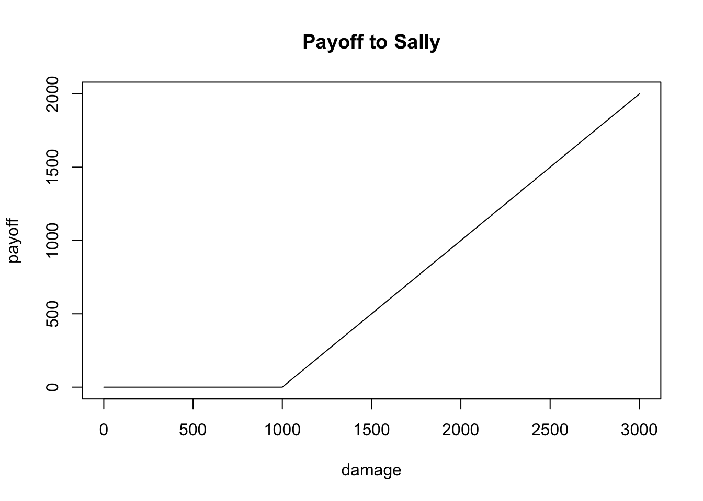

2 Options 101
The purpose of the chapter is to introduce the rudiments of options. We start by building intuition, and introduce formalism as necessary.
Options are simple contracts that show up everywhere in finance. They can be viewed as the building blocks of many other financial instruments. The theory of option pricing serves as the foundation of much of quantitative finance.
Options are insurance contracts wrapped around other financial assets. The asset that is being insured is called the underlying. The underlyings we consider in this book are stocks and ETFs, but the essential concepts are the same for other underlyings such as interest rates, corn futures, or barrels of oil.
Let’s build some intuition by considering a type of insurance that you are already familiar with: car insurance.
2.1 Car Insurance
Wolverine Trading is a successful market-making firm based in Chicago. The partners at Wolverine would like to get into the car insurance business. They have hired us as consultants to help devise a pricing policy for this new venture.
The type of underlying that Wolverine would like to insure is as follows: a specific driver coupled with a specific vehicle. The driver that is being insured is going to pay Wolverine premium. In exchange for the premium, Wolve will reimburse the driver whenever damage to the car exceeds a certain dollar amount, which is called the strike of the contract.
Intuition Check: Do you think that Wolverine should charge the same premium irrespective of the underlying? Why or why not?
After some deliberation, we have decided that price differentiation should based on the following contract features and underlying characteristics: strike price, time to expiration, price of the underlying, and volatility of the underlying.
Let’s explore these one by one.
Price of Underlying
Sandra is a prospective customer; she has two vehicles that she wants to switch over to Wolve Auto Insurance. One is a busted old Mazda 3 that she bought when she was a struggling graduate student. The other is a fancy self-driving Tesla she bought after starting her lucrative options trading career.
-ADD SIDE BY SIDE PICTURES HERE-
Intuition Check: Which car should be more expensive to insure? Why?
Strike Price of Contract
Wolverine has three different strike prices that they can offer Sandra for her Tesla:
- $0 (“at-the-money”)
- $1,000
- $5,000
Exercise: Order the premium for the three strike prices from cheapest to most expensive. Explain your answers.
Time to Expiration
Wolve Auto has three different contract tenors they can offer to Sandra for her Tesla:
- 0.25 years
- 0.50 years
- 1.00 years
Exercise: Order the premium for the three tenors from cheapest to most expensive. Explain your answer.
Voltility of Underlying
Wolve is pricing insurance for two different customers, Sally and Patty. Both customers are looking to purchase insurance for a fancy new self-driving Tesla. They both want a 1-year contract with with a $1,000 strike price. Sally’s friends describe her as calm, chill, responsible, quiet, serene. On the other hand, Patty’s friends describe her: wild, hyper, flaky, loud, and volatile.
Intuition Check: Who should Wolverine charge more for insurance? Why?
Insurance Payoff Graph
It’s 8 a.m. on a Saturday morning. Sally is driving on the freeway heading to her Crossfit class, hands at 10-and-2, eyes intently on the road, soothing classical music playing in the background.
Patty is also driving on the freeway, making her way home from an all night rave. As she drives, she smokes cigarette, touches up her makeup, and then snaps a few selfies for her Instagram story (morning car selfies have the best light…OMG).
Suddenly, Patty loses control and swerves in front of Sally. Patty is riding dirty and has no insurance. Sally, being her responsible self, made sure to buy a $1000-strike Wolverine policy as soon as she purchased her vehicle.
Here is a graph of the payoff to Sally’s insurance contract immediately following the accident. (Make sure to type out this code along with me!!)
strike <- 1000
damage <- seq(0, 3000, 500)
payoff <- pmax(damage - strike, 0)
heading <- "insurance payoff"
plot(damage, payoff, type = "n", main = "Payoff to Sally")
lines(damage, payoff, type = "l")
Notice that if the damage is less than the $1,000 strike price, Sally receives no reimbursement from her insurance. For every dollar over the strike price, Sally receives a one-for-one payout.
Summary
Let’s summarize what we’ve learned from the previous sections. The following statements are true for car insurance contracts, and also for option contracts:
The more valuable the underlying, the more valuable the contract.
At-the-money strikes are more valuable than out-of-the-money strikes.
The more time to expiration, the more valuable the contract.
The more volatile the underlying, the more valuable the contract.
The payoff function looks like a hockey stick.
2.2 Vanilla Options
Options come in many different varieties: European, American, Asian, digital, look-back, etc. European and American options are considered the simplest and for that reason they are collectively referred to as vanilla options. All other options are considered more complicated and are therefore referred to as exotic. Vanilla options are transacted in far greater volumes than exotics, and nearly all publicly traded options are vanilla. In this book we focus exclusively on vanillas.
American Options as Insurance
American (equity) options are insurance contracts that have as their underlying publicly traded stocks. They are called options because owning them gives you a right to do something, but you are not required to exercise that right. You have the option exercise your right if it happens to be beneficial to you. This right without obiligation has the effect of creating an insurance benefit for the option holder.
American options come in two varieties: puts and calls. Put contracts are insurance for those who already own the underlying stock and intend to sell it in the future; puts are protection against the price of the stock falling before they’ve had a chance to sell it. Call contracts are insurance for those who intend to buy the underlying stock in the future; calls are protection against the price of the stock rising before they’ve had a chance to buy it.
In reality, you don’t have to purchase either puts or calls as insurance. You don’t have to own the underlying to buy a put. And if you do happen to own the underlying, you don’t have to intend to sell it. Nor do you have to intend to buy the underlying in the future in order to buy calls. You can buy or sell either type of contract to express different views on the underlying.
American Option Contract Specification
After a lot of intuition building, we are finally ready to give a proper contract specification for American options.
Let’s consider American options on some stock \(S\). Calls and puts on \(S\) are defined by two additional contract features: strike price and expiration date.
Call: a contract that gives the right, but not the obligation, to buy a share of \(S\) at the strike price any time before the expiration date.
Put: a contract that gives the right, but not the obligation, to sell a share of \(S\) at the strike price any time before the expiration date.
Option Buyers and Option Sellers
There are two sides to every options transaction. The option buyer pays premium and owns a right. The option seller, on the other hand, receives premium and is obligated to respect the right that the buyer has purchased.
In the case of puts, if the option buyer exercises their right to sell the underlying, the option seller is obligated to buy the underlying from them. In the case of calls, if the option buyer exercise their right to buy the underlying, the option seller is obligate to sell the underlying to them.
Sentences like those in the previous paragraph can be a quite confusing at first. There are a lot of “buys” and “sells” floating around. Don’t worry, it will get less confusing over time. But in my experience, you will never outgrown need to occasionally take a deep breath, splash some cold water on your face, and then go back to the contract specifications.
Exercises: Ruobing has purchased an American call on SPY with a strike price of $250. He paid $10 in premium. Farez was the option seller on this transaction. It’s now the final day of the contract and Ruobing has still not exercised his right.
Under what circumstances will Ruobing choose to exercise?
Under what circumstances does Ruobing make money?
Under what circumstances does Farez make money?
What are the min and max of Ruobing’s PNL (include premium paid)?
What are the min and max of Farez’s PNL (include premium received)?
Answer the same questions but for a put with the same strike, expiration, and premium.
European vs American
European options are very similar to Americans. The only difference is that the owner of a European option can only exercise their right immediately after the final trading day of the contract. Recall that with Americans, the option holder can early exercise at any point before expiration.
To summarize: European options have an exercise date (point). American options have an exercise window - starting today and ending on expiration.
It turns out that in nearly all cases it is not optimal to early exercise an American option (we will explore this in the following chapter). For this reason, we will mostly consider American and European the options as being the same (only the most fastidious quants will take issue with this).
Because there is only one point of time at which a European option can be exercised, the notion of its payoff function is straight-forward: it is the value of exercising at the time of expiration. With American options, the notion of a payoff function is complicated by the possibility of early exercise. However, we will lean on the fact that it is almost never optimal to early exercise an American options, and thus define their payoff function as the value of exercising at the time of expiration.
Payoff Function
At this point we will introduce some mathematical notation, as it is the most efficient way to discuss certain aspects of options.
Suppose the current date is \(t\) . Consider a put and call have the same underlying, the same strike price \(K\), and the same expiration \(T\), where \(T > t\). Let \(S_{T}\) be the price of the stock at the time of expiration. We will denote the put buyer’s payoff as \(\pi_{b}\), and the call buyer’s payoff as \(\pi_{c}\). We can think of these payoffs as functions of \(S_{T}\) and we have that:
Put Buyer Payoff: \(\pi_{p}(S_{T}) = \max \big \{(K - S_{T}),0 \big \}\)
Call Buyer Payoff: \(\pi_{c}(S_{T}) = \max \big \{(S_{T} - K), 0 \big \}\)
Exercises:
Convince yourself that the above is true given the contract specification of vanilla puts and call.
Graph \(\pi_{p}\) and \(\pi_{c}\) as functions of \(S_{T}\).
Write the expressions for seller’s payoff of both puts and calls. Draw the graphs.
Total PNL takes into account the option premium. Let \(m_{p}\) be the put premium and let \(m_{c}\) be the call premium. Modify all four of your graphs to be total pnl functions, rather than payoff functions.
- If we consider \(\pi_{p}\) and \(\pi_{c}\) as functions of \(S_T \in (0, +\infty)\), then both functions are differentiable at all points except for \(S_T = K\).
- What are the two values of \(\frac{d\pi_{c}}{dS_{T}}\)?
- What are the two values of \(\frac{d\pi_{p}}{dS_{T}}\)?
- Recall that the current time is \(t\) and let \(S_{t}\) be the current price of the stock.
- If you own the put, which inequality do you hope is true between \(S_{t}\) and \(S_{T}\). Which inequality do you hope holds true between between \(S_{T}\) and \(K\)?
- If you own the call, which inequality do you hope is true between \(S_{t}\) and \(S_{T}\)? How about between \(S_{T}\) and \(K\)?
2.3 Long vs Short
If you spend time around financial markets you are likely to encounter the jargon terms and “short” and “long”. These terms can be a bit confusing to the uninitiated, but used in moderation they provide a useful shorthand. In this section we unpack this jargon; we will make use of it throughtout the text.
Buyers vs Sellers
Let’s return to the car insurance industry for a moment. In any transaction there is a buyer and a seller. In the car insurance market there are certain classes of entities that buy the insurance, and other classes of entities that sell the insurance. For example, I have purchased policies from State Farm and GEICO. But there would never be a situation in which GEICO or State Farm would buy an insurance policy from me.
Option markets are different in this respect. Various classes of entities - market-makers, hedge-funds, retail traders - buy options as well as sell options. For example, on a given trading day, I may sell an option which a hedge-fund will buy from me on an exchange. On the following day, I may buy a different option from that same hedge fund.
Said in a different way, in the options market, any particular entity can be a buyer of options and simultaneously a seller of options.
Net Position
As you saw in earlier exercises, the payoff of the option seller is the negative of the payoff of the option buyer. Thus, let us associate the number \(+1\) with the act of buying an option, and associate the number \(-1\) with the act of selling an option contract.
More generally, we can assign a quantity number \(Q\) with an options trade. If \(Q > 0\) then the trade is to buy \(Q\) options. If \(Q < 0\) then the trade is to sell \(|Q|\) options.
Intuition Check: What is the payoff function for buying \(Q\) options and holding them until they expire?
Suppose a trader named Lewei has engaged in \(n\) trades on a particular contract \(\mathcal{O}\). And suppose that the quantities of the trades were \(Q_{1}, \ldots, Q_{n}\). Liwei’s net position in the option \(\mathcal{O}\) is \(Q^{*}\) where \[\begin{align*} Q^{*} = \sum_{i=1}^{n} Q_{i}. \end{align*}\]This concept of net position brings us to our first meanings of long and short:
Long: If \(Q^{*}>0\) we say that Lewei is long \(Q^{*}\) contracts of \(\mathcal{O}\). More generally, we would say that Lewei has a net long position in \(\mathcal{O}\).
Short: If \(Q^{*}<0\) we say that Lewei is short \(|Q^{*}|\) contracts of \(\mathcal{O}\). More generally, we would say that Lewei has a net short position in \(\mathcal{O}\).
Said differently: you are long a contract if you are a net buyer of the contract, and we say you are short the contract if you are a net seller of the contract.
Value
The other meaning of long/short has to do with how you fair depending on the direction of change of the price of an asset.
You are said to be long an asset if you make money when the value of that asset goes up. You are said to be short an asset if you make money when the value of that asset goes down.
So for example, if you hold AAPL in your 401(K), then you are long AAPL because the value of your retirement savings increases when Apple’s stock price rises. Similarly, if you have a net short position in a call, then you are short that call (in both senses) because when the value of the call rises, you lose money because that is your liability.
Things get a little confusing when we mix the two meanings of long/short while discussing options. Enjoy the following exercises, such sentences are ubiquitous in options markets. *And remember splash the cold water liberally.)
Exercises:
If you have a net long position in a put, are you long or short the underlying?
If you have a net short position in a put, are you long or short the underlying?
If you have a net long position in a call, are you long or short the underlying?
If you have a net short position in a call, are you long or short the underlying?